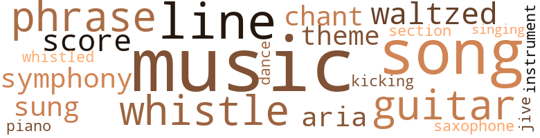
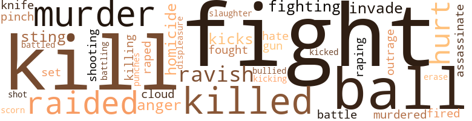
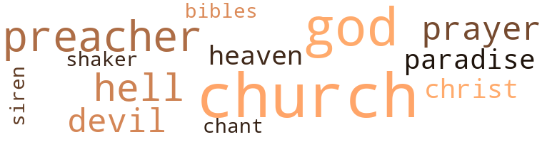

White Horse in Harlem, by Robinson, J. Terry (1965)
38 music-related terms matched in this text.
Most frequent terms in this topic: music (8); songs (3); phrase (2); song (2); whistle (2)
aria.n.01
Definition: an elaborate song for solo voice
| word | sentence |
|---|---|
| aria | After the flesh symphony , and after Ann had sung her aria - " Oh , daddy . . . Oh ! |
chant.n.01
Definition: a repetitive song in which as many syllables as necessary are assigned to a single tone
| word | sentence |
|---|---|
| chant | It 's the same old whore 's chant . ) |
dance.v.03
Definition: skip, leap, or move up and down or sideways
| word | sentence |
|---|---|
| dance | Then we went to the Paradise Bar at 110th and Eighth Avenue to listen to some jazz and to dance . |
guitar.n.01
Definition: a stringed instrument usually having six strings; played by strumming or plucking
| word | sentence |
|---|---|
| guitar | I stepped into the cocktail lounge and the soft sound of the trio - piano , bass , and guitar - filled my ears . |
| guitars | Usually there was a party or two going on , and the sound of Spanish guitars could be heard . |
kick.v.04
Definition: kick a leg up
| word | sentence |
|---|---|
| kicking | No use kicking , " I replied . |
music.n.01
Definition: an artistic form of auditory communication incorporating instrumental or vocal tones in a structured and continuous manner
| word | sentence |
|---|---|
| music | It was the music flowing into my ears that pushed open my eyes the second time . |
| music | She spoke with a voice that matched the music . |
| music | " Where is that enchanting music coming from ? |
| music | " It 's coming from the phonograph in the music room . |
| music | That 's the central headquarters from where any type of music can be piped into any room in the house . |
| music | Once I thought she was humming along with the music . |
| music | In a few moments the car was filled with recorded music . |
| music | The music on the car radio stopped and the announcer gave the time . |
musical_instrument.n.01
Definition: any of various devices or contrivances that can be used to produce musical tones or sounds
| word | sentence |
|---|---|
| instrument | She laughed , and it sounded like Miss Ella Fitzgerald using her voice for a musical instrument . |
phrase.n.02
Definition: a short musical passage
| word | sentence |
|---|---|
| phrase | I did n't dig the phrase . |
| phrase | But just where , well - that was another pig phrase . |
piano.n.01
Definition: a keyboard instrument that is played by depressing keys that cause hammers to strike tuned strings and produce sounds
| word | sentence |
|---|---|
| piano | It was a middle-class Negro living room - Mr. Christmas was an assistant super - intendent at one of the city 's branch post offices - modem furniture , thick rug , piano , television set , bookcase , white Venetian blinds , expensive wallpaper , a built-in fireplace ( for decoration ) , on top of the mantel over it two photos : one of a woman , the other of a young boy . |
sax.n.02
Definition: a single-reed woodwind with a conical bore
| word | sentence |
|---|---|
| saxophone | " Happy Cauldwell played saxophone back in the birth - of-jazz days . |
score.n.02
Definition: a written form of a musical composition; parts for different instruments appear on separate staves on large pages
| word | sentence |
|---|---|
| score | " And what is the score ? " |
section.n.01
Definition: a self-contained part of a larger composition (written or musical)
| word | sentence |
|---|---|
| section | Then I went inside the Trailways section and bought a ticket to Boston . |
singing.n.01
Definition: the act of singing vocal music
| word | sentence |
|---|---|
| singing | I have a singing group , a girl singer all under contract . |
song.n.01
Definition: a short musical composition with words
| word | sentence |
|---|---|
| song | If the song could have been judged by the way her record was selling at my store , she had a hit on her hands . |
| songs | A singer of songs . |
| songs | Sad songs , happy songs , the whole bit , " she said . |
| songs | Sad songs , happy songs , the whole bit , " she said . |
| song | I remembered hearing the song they were playing before . |
swing.n.05
Definition: a style of jazz played by big bands popular in the 1930s; flowing rhythms but less complex than later styles of jazz
| word | sentence |
|---|---|
| jive | It was pure jive . |
symphony.n.01
Definition: a long and complex sonata for symphony orchestra
| word | sentence |
|---|---|
| symphony | After the flesh symphony , and after Ann had sung her aria - " Oh , daddy . . . Oh ! |
theme.n.03
Definition: (music) melodic subject of a musical composition
| word | sentence |
|---|---|
| Theme | I punched Dee Swinson 's " When Sunny Gets Blue " and two sides by John Coltrane , " You Say You Care " and " Theme For Ernie . " |
tune.n.01
Definition: a succession of notes forming a distinctive sequence
| word | sentence |
|---|---|
| line | I dialed and listened , then cursed Sleepy on the other end of the unanswered line for not being there . |
| line | I wondered if Tick had written that line for him . |
| lines | She spoke like she was reciting lines from a poem . |
waltz.v.01
Definition: dance a waltz
| word | sentence |
|---|---|
| waltzed | As the dope began to cook I called Singe He waltzed into the kitchen telling Ann not to go away . |
whistle.v.01
Definition: make whistling sounds
| word | sentence |
|---|---|
| whistle | A whistle escaped Becker 's mouth as his left hand came up to stroke his chin . |
| whistled | Detective Crowe whistled . |
| whistle | Inside the apartment Singe let out a whistle . |
whistle.v.05
Definition: make a whining, ringing, or whistling sound
| word | sentence |
|---|---|
| sung | After the flesh symphony , and after Ann had sung her aria - " Oh , daddy . . . Oh ! |
86 violence-related terms matched in this text.
Most frequent terms in this topic: fight (11); kill (8); ball (6); murder (5); killed (5)
anger.n.01
Definition: a strong emotion; a feeling that is oriented toward some real or supposed grievance
| word | sentence |
|---|---|
| anger | Her anger was always a short-lived thing . |
| anger | " O Lord , rebuke me not in thine anger , neither chasten me in thy hot displeasure . |
assassinate.v.01
Definition: murder; especially of socially prominent persons
| word | sentence |
|---|---|
| assassinate | How can you break bread with a man , Tick Wash - ington thought , when at any moment you might have to assassinate his son ? |
battle.v.01
Definition: battle or contend against in or as if in a battle
| word | sentence |
|---|---|
| battle | It is this that they battle for ! |
| battling | Instead of being in the Southland with his race brothers and sisters , the sit-iners , the freedom riders , battling for the equal rights his people so justly deserve , he 's in New York City running an illegal business . |
| battled | So the thought and desire battled for control . |
cloud.n.05
Definition: suspicion affecting your reputation
| word | sentence |
|---|---|
| cloud | He also knew the kids inhaled ether and airplane glue to get , what they called , " high on cloud nine . |
contemn.v.01
Definition: look down on with disdain
| word | sentence |
|---|---|
| scorn | " ' For thy sweet love remember 'd such wealth brings , That then I scorn to change my state with kings , ' " she took the quill out of her nose to say . |
displeasure.n.01
Definition: the feeling of being displeased or annoyed or dissatisfied with someone or something
| word | sentence |
|---|---|
| displeasure | " O Lord , rebuke me not in thine anger , neither chasten me in thy hot displeasure . |
erase.v.01
Definition: remove from memory or existence
| word | sentence |
|---|---|
| erase | It took a tire blowout , and the muscle losing control of the car , to erase the Freud theory . |
fight.n.05
Definition: a boxing or wrestling match
| word | sentence |
|---|---|
| fight | He was glad to hear that somebody else , besides the police , was taking up the fight against narcotics and crime in Harlem . |
| fight | Tell them the fight against dope is war . |
| fight | " She put up a hell of a fight , but she 's safe . " |
| fight | The story related how Singe put up a stiff fight with Detectives Tick Washington and George Crowe , of the Narcotic Squad , after they had apprehended him with a quantity of heroin in his possession . |
| fight | Then the fight to control himself began . |
| fight | But the fight is lost . |
| fight | My father , who , not long ago , was named a member to the Governor 's new Advisory Council on Drug Addiction , has pledged the remainder of his life to the fight against narcotics . |
| fight | But the doctor had put up a fight . |
fight.v.02
Definition: fight against or resist strongly
| word | sentence |
|---|---|
| fighting | How would it affect the preacher when he found out - and it was most certain that he would - that this very evil he spoke about , and was fighting against , was one his own son was in liaison with ? |
| fought | The woman fought back the grief . |
| fighting | " It would be a shame if Curly was mixed up with this very evil his father is fighting so hard against . |
| fight | Why , I had to fight you off . |
| fight | Splits her bankroll with him , and sends him down South to fight for equal rights , " I cut her off to say . |
| fight | Washington did n't care for him , or any other stool pigeon , but stool pigeons were a necessary evil to fight an evil . |
gun.n.01
Definition: a weapon that discharges a missile at high velocity (especially from a metal tube or barrel)
| word | sentence |
|---|---|
| gun | Midway in the black his capture was brought about by a well-aimed shot from the gun of Detective Washington . |
hate.v.01
Definition: dislike intensely; feel antipathy or aversion towards
| word | sentence |
|---|---|
| hate | I 'd hate to find out different , " he said , waving Pete and the other muscle to follow . |
homicide.n.01
Definition: the killing of a human being by another human being
| word | sentence |
|---|---|
| homicide | " I do n't know what to think , Tom , " said Washington , calling the homicide sergeant by his first name . |
| homicide | " And any - way you look at it , it 's homicide . |
indignation.n.01
Definition: a feeling of righteous anger
| word | sentence |
|---|---|
| outrage | It was an outrage ! |
injury.n.01
Definition: any physical damage to the body caused by violence or accident or fracture etc.
| word | sentence |
|---|---|
| hurt | I zipped up my pants as she rolled over on her stomach , looking like a hurt puppy . |
invade.v.01
Definition: march aggressively into another's territory by military force for the purposes of conquest and occupation
| word | sentence |
|---|---|
| invade | The cause , the cure , these he felt were - in a sense - not for him to invade upon . |
| invade | Ann Moore asked , to invade my thoughts . |
kick.v.04
Definition: kick a leg up
| word | sentence |
|---|---|
| kicking | No use kicking , " I replied . |
kick_back.v.02
Definition: spring back, as from a forceful thrust
| word | sentence |
|---|---|
| kicked | Fat Face was bringing his fist down for the third time , on the same jaw , when I raised my bare feet and kicked as hard as I could . |
| kicks | For her , it 's strictly kicks ! |
| kicks | He took dope for the kicks of the moment . |
kill.v.10
Definition: cause the death of, without intention
| word | sentence |
|---|---|
| kill | " Saw a boy kill his fool self once , doing that . |
| killing | There , in his hallway , they hit him on the head , killing him . |
| killed | " I did hear Bucky got killed because of some shit . " |
| kill | Of course , I could kill you , " I added , in hopes it might frighten her . |
| killed | Why , you 're supposed to have killed him , " said Fat Face . |
| kill | I did n't know he had stolen it from you guys , and I did n't kill him ! " |
| kill | " They 'll kill you . " |
| kill | " I should kill you , " Mr. Dade declared . |
| killed | I had killed my own sister , just as sure as if I had stuck that needle in her arm myself . |
| kill | * I also had Mr. Dade 's word that if I came back for more , or ever saw his daughter again he would kill me . |
| kill | Why should anyone want to kill Dallas ? " |
| killed | Why someone killed him , and who that someone is , " said Sergeant Moran softly . |
| killed | The police did find out why the doctor was murdered , and who his murderers were : Two young men , both Ne - groes ; one eighteen , the other nineteen , both dope addicts , admitted when apprehended they had robbed and killed the doctor . |
| kill | They did n't mean to kill him , they said . |
knife.n.02
Definition: a weapon with a handle and blade with a sharp point
| word | sentence |
|---|---|
| knife | Pulling a switchblade knife and breaking away , he tried to escape on the crowded thoroughfare of 125th Street between Eighth and St. Nicholas Avenues . |
murder.n.01
Definition: unlawful premeditated killing of a human being by a human being
| word | sentence |
|---|---|
| murder | Was it murder or accidental death ? " said Becker . |
| murder | Especially when , perhaps , murder is involved . |
| murder | You ca n't admit to yourself that he may be involved in a murder . |
| murder | You do believe , do n't you , that murder is the one act all beings are capable of performing ? |
| murder | Completed his internship and a residency at Harlem Hospital in New York City , where he was a staff member at the time of his murder in 1948 . |
murder.v.01
Definition: kill intentionally and with premeditation
| word | sentence |
|---|---|
| murdered | It is you who pay for this operation by being robbed , assaulted , and even murdered by addicts desperate to get money for a shot of the poison . |
musket_ball.n.01
Definition: a solid projectile that is shot by a musket
| word | sentence |
|---|---|
| ball | " Look , take away the ball and chain . |
| ball | The Palm Cafe , Red Randolph 's Shalimar , Sugar Ray 's , Wells , Bowmans , Jock 's Place ; we never left Harlem and we had a ball . |
| balls | Detective Washington knew that the pills became what was known as goof balls when several were taken at a time and washed down with beer or wine . |
| balls | Youths under the influence of these goof balls can be some very bad actors . |
| ball | They were watching two men , bare to the waist and wearing swimming trunks and sneakers , slapping the small rubber ball against the cement wall . |
| ball | He sent the ball flying to the wall . |
| ball | The ball came sailing back over their heads . |
| ball | " Hold it , kid , " said Tick Washington , as they went on with their game with another ball . |
open_fire.v.01
Definition: start firing a weapon
| word | sentence |
|---|---|
| fired | One bullet , fired at close range , had entered his brain . |
pain.v.02
Definition: cause emotional anguish or make miserable
| word | sentence |
|---|---|
| hurt | " Did I hurt you ? " |
| hurt | These cops wo n't hurt you , " I said . |
pinch.n.02
Definition: an injury resulting from getting some body part squeezed
| word | sentence |
|---|---|
| pinch | Then , with the spoon , I picked up a pinch of the powder and dropped it into the ampules . |
punch.n.01
Definition: (boxing) a blow with the fist
| word | sentence |
|---|---|
| punches | On his drive to the hospital , Detective Washington had decided to put it straight on the line to Curly ; no punches pulled . |
raid.v.01
Definition: search without warning, make a sudden surprise attack on
| word | sentence |
|---|---|
| raided | We raided a hole last week . |
| raided | Junkies knew that the places they congregated in were subject to be raided at any time . |
| raided | No matter how much dope was found on the floor of a raided premises , or behind the radiators , or in the torn top of a bar stool , the police could n't claim it belonged to any one person . |
| raided | He could have raided the place and not had any trouble . |
rape.v.01
Definition: force (someone) to have sex against their will
| word | sentence |
|---|---|
| raped | " You raped me ! " |
| raping | Me raping you . |
| ravish | " It takes only a few minutes for somebody to rob and ravish you , " I said , looking at her firm , strong body . |
| ravish | " But for them to take time to ravish me , well - " The telephone rang . |
| ravish | " I wo n't ravish you , " I smiled , noticing her hesitancy . |
shoot.v.02
Definition: kill by firing a missile
| word | sentence |
|---|---|
| shot | He looked at Fingers and knew by experience the man had n't long ago shot some dope . |
shooting.n.02
Definition: killing someone by gunfire
| word | sentence |
|---|---|
| shooting | I did n't know what she had in mind after witnessing Singe shooting up . |
sic.v.01
Definition: urge to attack someone
| word | sentence |
|---|---|
| set | I had my mind set on much more . |
slaughter.n.03
Definition: the savage and excessive killing of many people
| word | sentence |
|---|---|
| slaughter | Because they send pigs to the slaughter , too . |
sting.n.03
Definition: a painful wound caused by the thrust of an insect's stinger into skin
| word | sentence |
|---|---|
| sting | I shook my head to send away the sting . |
| sting | In our world , Mary 's and mine , she had simply made a sting . |
strong-arm.v.02
Definition: be bossy towards
| word | sentence |
|---|---|
| bullied | Then , quite suddenly , the thought of the heroin , Fat Face , Ann , Tick Washington - all of which had seemed forgotten - bullied its way into my mind . |
44 religion-related terms matched in this text.
Most frequent terms in this topic: church (11); God (8); preacher (5); hell (4); devil (3)
bible.n.02
Definition: a book regarded as authoritative in its field
| word | sentence |
|---|---|
| Bibles | Even with his hand on five Bibles he 'd lie , " said Curly , turning back to face the detective . |
chant.n.01
Definition: a repetitive song in which as many syllables as necessary are assigned to a single tone
| word | sentence |
|---|---|
| chant | It 's the same old whore 's chant . ) |
church.n.02
Definition: a place for public (especially Christian) worship
| word | sentence |
|---|---|
| church | I could n't live in the same house with him now since - after thirty years of gospel talk - some fools finally elected him as the min - ister of their church . |
| church | " Maybe it 's something in the Boston air , " said the detective , bringing the car to a stop in front of a church . |
| church | He really seemed glad to see me , and in a church at that . |
| church | " I 'll be at the church all day , " she said . |
| church | " It would be nice if you came by the church . |
| church | Tick Washington 8 The detective was in the same head-shaking frame of mind as he drove to the Parker residence : a two story house that sat alongside the minister 's church . |
| church | Finding no vacant space in front of the church , the detective double-parked . |
| church | Like a church sexton pulling a rope her name suddenly rang a bell loud and clear . |
| church | He crossed the street , and stood in front of a church building that once housed a bank , to wait for the bus . |
| church | He paid no attention to the painted sign hanging from one of the church windows : " CITIZENS ' ANTI-NARCOTIC and ANTI-CRIME COMMITTEE MEETS HERE FRIDAY NIGHT . |
church.n.04
Definition: the body of people who attend or belong to a particular local church
| word | sentence |
|---|---|
| church | Your father told me you were down to Reverend Dunston 's church last night at the meeting . |
eden.n.01
Definition: any place of complete bliss and delight and peace
| word | sentence |
|---|---|
| Paradise | Big Wilt 's Paradise , where Ann did a very naughty twist . |
| heaven | " Thanks for a glimpse of heaven . |
| heaven | Then , with the wind as my legs , I bounced off the highway and , thinking the devil was behind me , tried to fly to heaven . |
| Paradise | Then we went to the Paradise Bar at 110th and Eighth Avenue to listen to some jazz and to dance . |
god.n.03
Definition: a man of such superior qualities that he seems like a deity to other people
| word | sentence |
|---|---|
| God | God will send you back to us when He 's ready . " |
| God | The crying to God . |
| God | She 's in God 's hands now - in God 's hands . " |
| God | She 's in God 's hands now - in God 's hands . " |
| God | " She 's in God 's hands now . " |
| God | If you believe in God you have to be on God 's side . |
| God | My father is a man of God . |
| God | He shall , I 'm quite sure , accept her death as the will of God . |
hell.n.01
Definition: any place of pain and turmoil
| word | sentence |
|---|---|
| hell | I could hear her laughing like hell as I made my way to the elevator . |
| hell | " Then where in the hell were you all night ? |
| hell | What the hell has detective stories to do with this ? " |
| hell | " I hope to hell it is n't true . " |
messiah.n.01
Definition: any expected deliverer
| word | sentence |
|---|---|
| Christ | The filled bookcase , small organ , two large lamps , large photo of the Parkers on their wedding day , a large Zenith radio , a wooden ashtray stand that Curly had made while attending elementary school , a small statue of Christ hanging on the cross , two large chairs and a sofa covered over with a printed cloth . |
| Christ | " Put some clothes on , for Christ sake ! " |
prayer.n.01
Definition: the act of communicating with a deity (especially as a petition or in adoration or contrition or thanksgiving)
| word | sentence |
|---|---|
| prayers | I listened to the speeches and prayers and the testi - monials of two ex-junkies who gave the credit for their rehabilitation to the Citizens ' Anti-Narcotic Anti-Crime Committee . |
prayer.n.04
Definition: a fixed text used in praying
| word | sentence |
|---|---|
| prayer | The reverend reached into his coat pocket for the small prayer book he always carried . |
| prayer | The reverend closed his prayer book and walked over to the two men . |
preacher.n.01
Definition: someone whose occupation is preaching the gospel
| word | sentence |
|---|---|
| preacher | How would it affect the preacher when he found out - and it was most certain that he would - that this very evil he spoke about , and was fighting against , was one his own son was in liaison with ? |
| preacher | " My father wanted me to be a preacher like him , " I said , not really knowing why I laughed . |
| preacher | " You look like you would have made a good preacher . |
| preacher | " What has my forehead got to do with whether I would have made a good preacher or not ? " |
| preacher | She knew a marrying preacher , she said , who could be persuaded - for a price - to up the date the ceremony was actually performed . |
satan.n.01
Definition: (Judeo-Christian and Islamic religions) chief spirit of evil and adversary of God; tempter of mankind; master of Hell
| word | sentence |
|---|---|
| devil | Then , as if the devil had suddenly come up out of hell and touched his shoulder , he tore the card in pieces . |
| devil | It would not have been fair to have told him that his other child , his only son , was in the devil 's hands . |
| devil | Then , with the wind as my legs , I bounced off the highway and , thinking the devil was behind me , tried to fly to heaven . |
shaker.n.02
Definition: a member of Christian group practicing celibacy and communal living and common possession of property and separation from the world
| word | sentence |
|---|---|
| shaker | Oscar was smiling , the gold in his mouth gleaming , as lie held the shaker up before him . |
siren.n.01
Definition: a sea nymph (part woman and part bird) supposed to lure sailors to destruction on the rocks where the nymphs lived
| word | sentence |
|---|---|
| siren | I began laughing like an ambulance siren . |